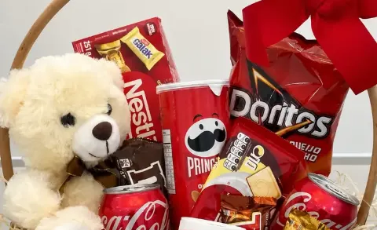

Zadoni Presentes
Presentes com entrega em Canaã dos Carajás
Os mais pedidos

Destaque Cesta de aniversárioMimos e surpresas para comemorar Ver modelosPresentes com entrega em Canaã dos Carajás

Destaque Cesta de aniversárioMimos e surpresas para comemorar Ver modelos